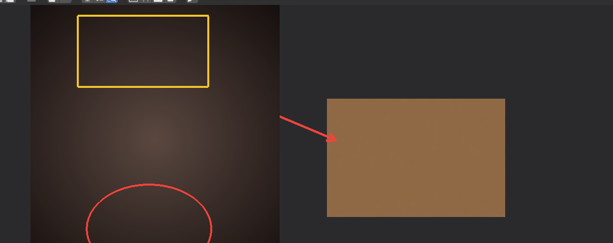
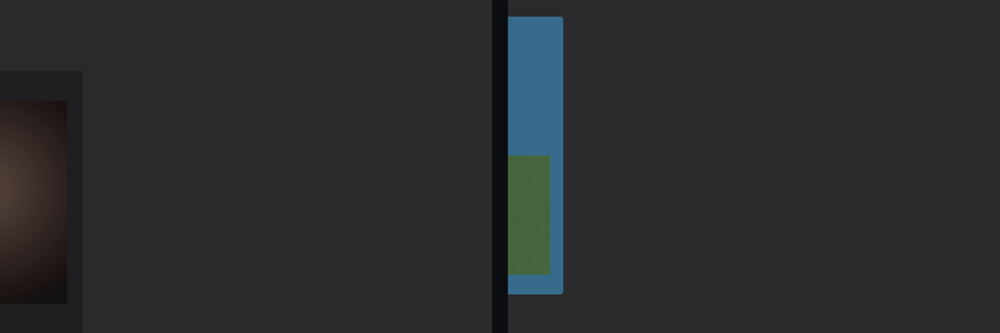
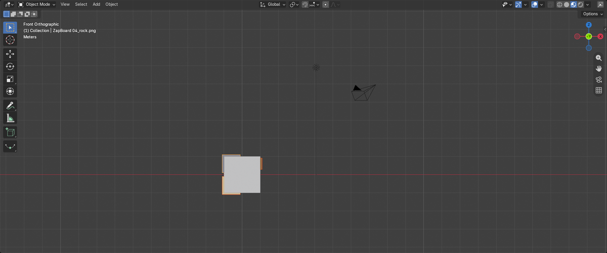

Group frames that move as one
A reference board built into Blender. Drop images in, arrange and mark them up — and they save inside your .blend.
Each tool works right on the board, inside Blender. Pro adds the colour, video and 3D tools.




The free add-on is a complete reference board. Pro adds the colour, video and 3D tools — a one-time unlock in the same listing.
Inside your .blend file — images, notes and frames. Open it anywhere and it is all still there, and you can keep several boards in one file.
Free is a complete reference board. Pro adds the colour tools, video and GIF, image adjust, layout templates, and sending to the 3D view — a one-time $5 unlock.
Yes, all three. The only exception is Reveal File, which is Windows only.
Start free. Install the add-on and build a board today. Pro is a one-time $5 unlock in this same listing — no subscription, free updates.